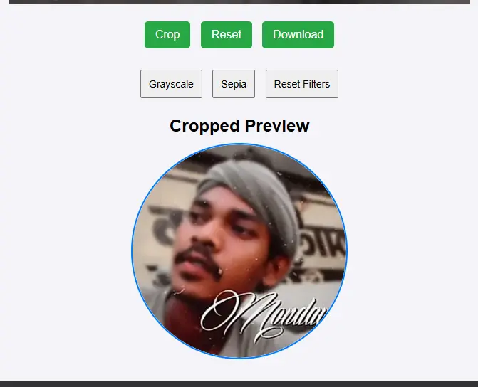

Crop Picture Into a Circle Tool – A Complete Guide
In today’s digital era, everyone uses image editing tools. But when it comes to “crop picture into a circle”, most people are looking for a user-friendly and efficient tool. In this article, we will tell you about a tool that is not only easy, but also provides high-quality and customizable cropping options. You can use it on mobile or desktop, without any hassle.
What is Crop Picture into a Circle Tool?

This is an advanced online tool that allows you to crop any image in a circular shape. With the help of this tool, you can give a professional touch to your photos, whether it is for a profile picture or for a design project.
The biggest benefit of this tool is that you can:
Zoom and pan the image.
Apply filters (such as grayscale, sepia).
Download the cropped image in PNG, JPEG or WebP format.
This tool is perfect for both beginners and professionals!
Features of Circular Cropping Tool
1. Circular Cropping
The primary feature of this tool is to crop any image in a circular shape. In just a few clicks, you can adjust your photo in a perfect circle. This feature is quite popular for creating profile pictures, logos and banners.
2. Zoom and Pan Controls
You can increase or decrease the size of your image to fit it exactly accurately. With the drag-and-drop functionality, you can move the image up, down, or both sides.
3. Filters for Enhanced Images
This tool has built-in filters, which make your image more attractive:
Grayscale: Black-and-white effect.
Sepia: Vintage tone effect.
Reset Filters: Option to go back to the original look.
4. Aspect Ratio Options
You can use predefined aspect ratios, such as 1:1, 4:3, and 16:9, for cropping according to your needs.
5. Real-Time Crop Preview
When you crop, you get a live preview in which you can see the final look of your cropped image. This lets you know what the end result will look like.
6. Download Options
You can download your cropped image in high-quality formats:
PNG: Best for transparent backgrounds.
JPEG: Compressed for size and compatibility.
WebP: Advanced format that keeps the size small without compromising the quality.
How to Use This Tool to Crop a Picture into a Circle?
This tool is very simple to use. Just follow the steps given below:
Step 1: Upload Image
Click on the tool and upload an image from your device. It supports JPEG, PNG, and WebP formats.
Step 2: Adjust Image
Move your image using the Drag and Pan controls.
Adjust the size of the image using the Zoom in and Zoom out buttons.
Step 3: Apply Filters (Optional)
Make your image look more attractive by using Grayscale or Sepia filters. If you don’t like the changes, use the “Reset Filters” button.
Step 4: Crop
Set the image inside the circular crop boundary. When you are satisfied, click on the “Crop” button.
Step 5: Download
Preview the cropped image and save it to your device by clicking on the “Download” button.
Benefits of Circular Crop Tool
User-Friendly: This tool is so easy that anyone can use it without any technical knowledge.
Mobile-Friendly: You can use it seamlessly on your mobile or tablet.
Customizable Options: Filters, zooming, and aspect ratio options make this tool ideal for all types of users.
Free to Use: You do not need to make any subscription or payment to use this tool.
No Watermarks: There will be no unwanted watermark on the cropped image, which makes it professional and clean.
Common Use Cases:
Profile Pictures: Create perfect circular profile pictures for social media platforms like Instagram, Facebook and LinkedIn.
Designing Logos: Ideal for creating circular logos for businesses.
Presentations and Banners: Create professional images for creative content.
Personal Projects: Create aesthetic and unique images for your hobbies.
Frequently Asked Questions
1. Will this tool work on mobile devices?
Yes, this tool is mobile-responsive and works in any browser.
2. Can I download the image with a transparent background?
Of course, you can download the image in a transparent background by choosing PNG format.
3. Will I get a watermark after cropping?
No, you will get watermark-free cropped images with this tool.
4. Is this tool free?
Yes, it is 100% free and there are no hidden charges for using it.
SEO Optimized Keywords for Better Results
Crop picture into a circle online
Circular image cropping tool
Online circular crop editor
Image crop for profile picture
Crop images without watermark
Free circular crop tool
Circular cropping for social media
Conclusion
Nowadays everyone needs a simple and effective tool that gives high-quality results. This "Crop Picture into a Circle Tool" will give you the experience of professional and hassle-free image cropping. Try it now to give a unique touch to your photos and download high-quality cropped images!